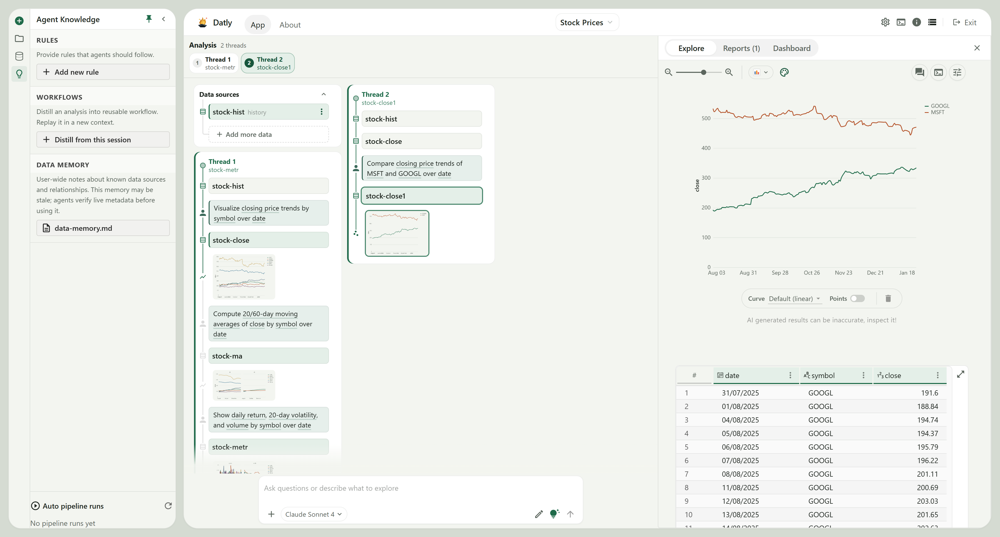
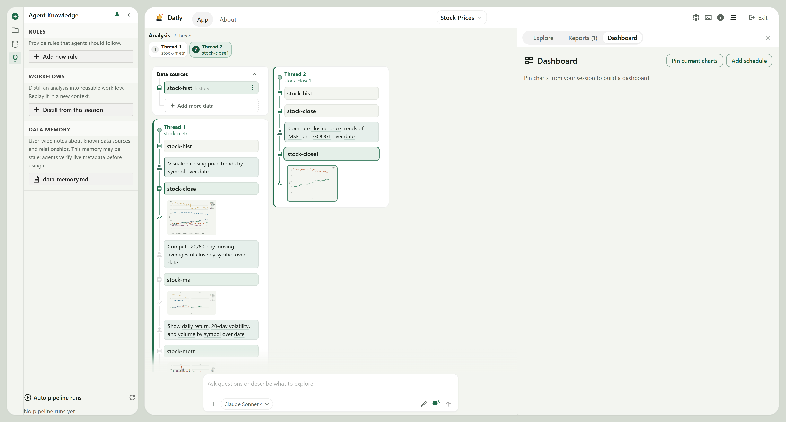

Engineering Rigor Meets Fluid Exploration
Built from the ground up to solve the state corruption of notebooks and the rigidity of legacy BI.
Non-Destructive Data Threads
Each analytical inquiry forms an isolated thread branch (DAG). Follow-up questions build on intermediate derived tables without mutating baseline datasets or overwriting state.
Lineage State MachineGround-Truth Data Canvas
Say goodbye to AI hallucinations. Every visualization is drawn from a physical derived table that sits directly underneath the chart. Inspect every cell and download verified CSVs.
Zero Phantom MetricsDuckDB In-Memory Engine
Lightning-fast vectorized query execution powered by DuckDB, Pandas, and PyArrow. Run complex aggregations, window functions, and joins across millions of rows locally in milliseconds.
Vectorized AnalyticsConcept Encoding Shelves
Drag and drop data fields into intuitive visual encoding shelves: X, Y, Color, Size, Facet, and Repeat. Bi-directional sync between natural language prompts and Vega-Lite specs.
Grammar of GraphicsTipTap Narrative Reports
Transform raw exploratory charts into executive-ready communication artifacts. A rich WYSIWYG editor allows you to interweave narrative commentary with live embedded visual cards.
Executive PublishingLocal-First Zero Exfiltration
Enterprise data governance built-in. Your raw rows never leave your computer. Only column schemas and sanitized metadata are sent to LLMs for code synthesis.
Air-Gapped & OfflineThe Row Under The Line
A table can hold an answer and still hide it. Datly ensures the question, the chart, and the exact computed data rows always remain visible together.

Explore: The Synchronized Check
When a question is asked (e.g. Closing price for GOOGL and MSFT), Datly computes a new derived table (stock-close) and plots it. The grid directly under the curve displays the exact values. If the model made an error, you catch it instantly before sharing.

Dashboards & Reporting Without Copying
Pinning charts into dashboards or embedding them into TipTap narrative reports does not duplicate data. All surfaces share live references to the underlying data thread DAG. Close the canvas anytime—your derived tables stay persistent.
Connect Once. Query Locally.
Incorporate live tables from your data lakes, warehouses, relational databases, cloud buckets, and live web sources.
Databricks
SQL Warehouse / DeltaGoogle BigQuery
GCP Analytics / OAuthClickHouse
Ultra-fast OLAPAWS Athena & S3
Presto Serverless S3Azure Kusto (ADX)
Telemetry & KQLPostgreSQL
Direct Schema InspectionMySQL & MariaDB
Transactional TablesMicrosoft SQL Server
Enterprise SchemasDuckDB & SQLite
Local Embedded EngineMongoDB
Auto JSON FlatteningAzure Cosmos DB
Global Distributed NoSQLAzure Blob Storage
Parquet & CSV BlobsYahoo Finance (yfinance)
Live Stock Market FeedsExcel & Parquet
Multi-sheet .xlsx, .csvWeb Table Scraper
Playwright + lxml EngineApache Superset
Dataset & Chart ImportWhy Teams Choose Datly
A side-by-side technical evaluation against traditional data exploration tools.
| Feature / Security Control | Jupyter Notebooks | Legacy Cloud BI (Tableau / PowerBI) | SQL IDEs (DBeaver) | DATLY IDE |
|---|---|---|---|---|
| Natural Language AI Synthesis | ⚠️ Third-party plugin | ⚠️ Costly proprietary copilot | ❌ None or basic autocompletion | ⚡ Native Grounded Agent (@table) |
| Ground-Truth Row Grid Under Chart | ❌ Separate cell output | ❌ Complex nested drill-down | ❌ Manual query required | 🛡️ Always Visible on Canvas |
| Visual Encoding Shelves + Agent | ❌ Code cells only | ⚠️ Shelves only (No Agent) | ❌ Code only | ✅ Bi-Directional Shelves + Agent |
| Local Data Privacy (Zero Exfiltration) | ✅ Local execution | ❌ Cloud ingestion required | ✅ Local query | 🔒 100% Local (Schema-Only to LLM) |
| Data Lineage Architecture | ❌ Linear, stateful cell traps | ❌ Static data models | ❌ Query history list | 🌲 Branching Data Threads (DAG) |
| In-Memory Vectorized Engine | ⚠️ Kernel dependent | ⚠️ Proprietary VertiPaq/Hyper | ❌ Remote DB dependent | ⚡ DuckDB + Pandas + PyArrow |
| WYSIWYG Narrative Reporting | ❌ Markdown cells only | ⚠️ Heavy dashboard canvas | ❌ None | 📝 TipTap Rich-Text Editor |
| Automated Web Table Scraper | ❌ Manual BeautifulSoup | ❌ Not supported | ❌ Not supported | 🌐 Built-in Headless Playwright |
| Model Agnostic (BYOK / Local) | ⚠️ Manual API wiring | ❌ Vendor lock-in | ❌ N/A | 🔓 LiteLLM (Claude, GPT, Ollama) |
Launch Datly in Under 60 Seconds
Choose your preferred installation method: modern uv package manager, docker container, or 1-prompt AI assistant.
git clone https://github.com/arpanjot-coding/Datly.git
cd Datly
# 2. Build the frontend interface
yarn && yarn build
# 3. Synchronize backend & launch local analytical IDE
uv sync
uv run data_formulator
# Open browser at: http://localhost:5567
git clone https://github.com/arpanjot-coding/Datly.git && cd Datly
yarn && yarn build
python -m venv .venv
source .venv/bin/activate # On Windows: .venv\Scripts\activate
pip install -e .
data_formulator
git clone https://github.com/arpanjot-coding/Datly.git && cd Datly
docker-compose up --build -d
# Ready at: http://localhost:5567
Set up and launch Datly: synchronize Python dependencies using uv, install frontend packages via yarn, compile the production bundle, and launch the Datly analytical workspace on localhost.
yarn electron:build
# Binaries generated in ./release-electron/
Download Desktop Packages
Native standalone performance for Windows, macOS, and Linux with automated hardware acceleration.
Datly Desktop Suite v0.8.0-beta
Electron 43 Native Container · DuckDB Embedded Engine · Multi-LLM Provider
Everything You Need to Know
Clear answers to technical, security, and integration questions.